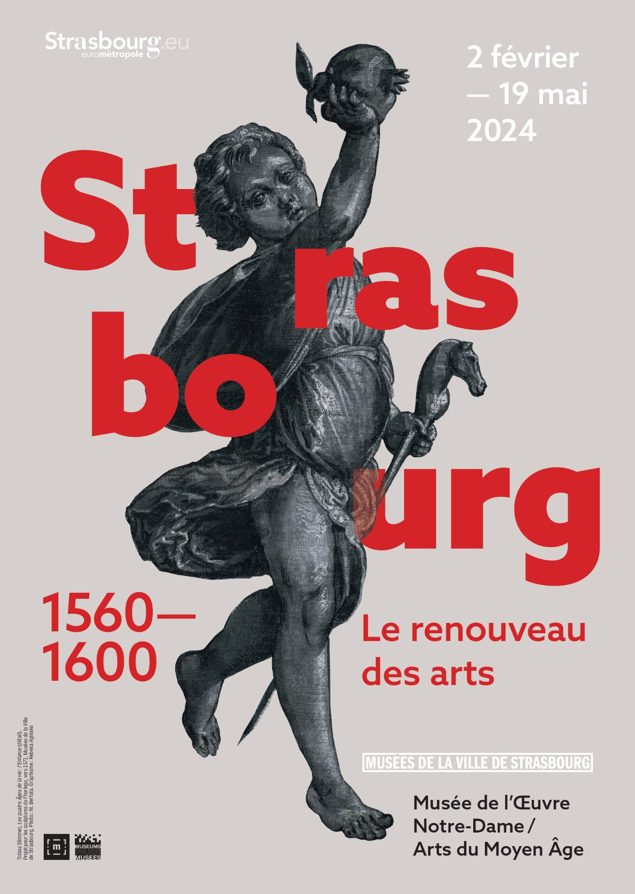

Exposition Tobias Stimmer
Le Musée de l'Œuvre Notre-Dame de Strasbourg présente du 2 février au 19 mai 2024
une exposition sur la Renaissance à Strasbourg entre 1560 et 1600, en mettant notamment l'accent sur l'œuvre de Tobias Stimmer.

vidéo d'annonce de Cécile Dupeux, conservatrice du musée.
dossier de presse (press kit)
À l'occasion de cette exposition, plusieurs parutions sont annoncées :
- Strasbourg 1600. Le renouveau des arts.
Catalogue de l’exposition.
Collectif, sous la direction de Cécile Dupeux et Jean-David Huhardeaux Touchais.
Avec les contributions de Georges Bischoff, Liliane Châtelet-Lange, Cécile Dupeux
Jean-David Huhardeaux Touchais, Fanny Kieffer, Pierre Kintz, Frank Muller, Louis-Napoléon Panel, Elizabeth Petcu, Florian Siffer, Anne Vuillemard-Jenn.
276 pages, environ 250 illustrations.
ISBN : 978235125178.
Prix de vente : 45 euros.
- Petit livre d’art étrange et merveilleux. Modèles d’hier pour aujourd’hui
Edition famille d’un livre de modèle de 1538 :
le Kunstbüchlein d’Heinrich Vogtherr l'Ancien.
En coédition avec la Bibliothèque humaniste de Sélestat.
Texte de Cécilia Michel.
72 pages, 64 illustrations, avec une planche de tatouages éphémères.
ISBN 9782351252192.
Prix de vente : 12 euros
- Le titre complet est « Ein frembds und wunderbars Kunstbüchlin
allen Molern, Bildschnitzern, Goldschmiden, Steinmetzen, Schreinern,
Platnern, Waffen und Messerschmiden hochnutzlich zů gebrauchen,
Der gleich vor nie keins gesehen, oder inn den Truck kommen ist ».
- Un original de 1538 de cet ouvrage est disponible gratuitement
ici
(version PDF téléchargeable)
- édition de 1572
- Certains auteurs mentionnent une édition de 1537, mais nous
ne l'avons pas localisée.
- L’Architectura de Wendel Dietterlin.
Reprint du traité d’architecture de Wendel Dietterlin publié entre 1593 et 1598.
Texte de Florian Siffer.
64 pages, 45 illustrations.
ISBN : 9782351252208
Autres documents utiles